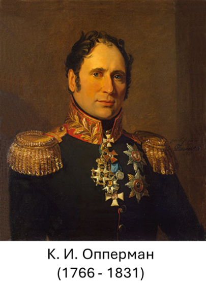
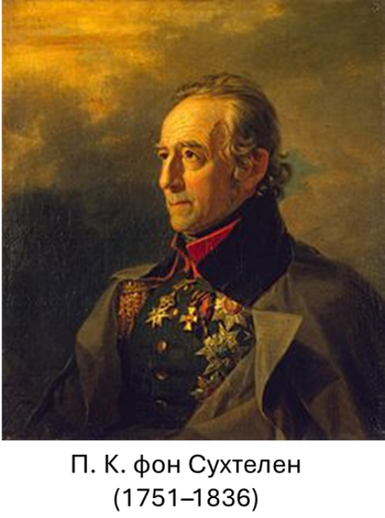
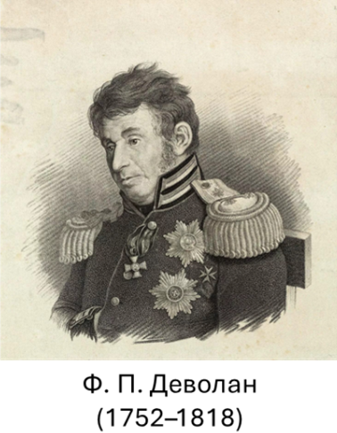
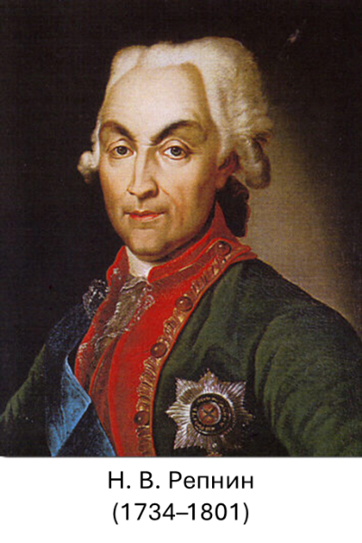
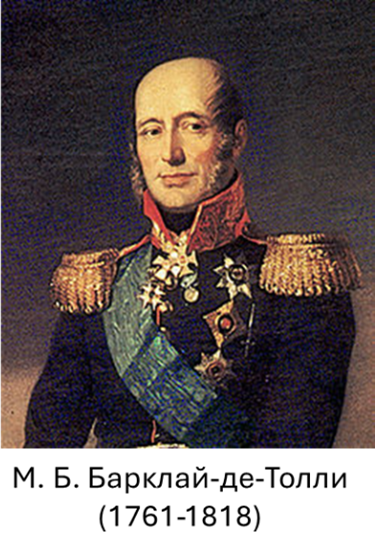
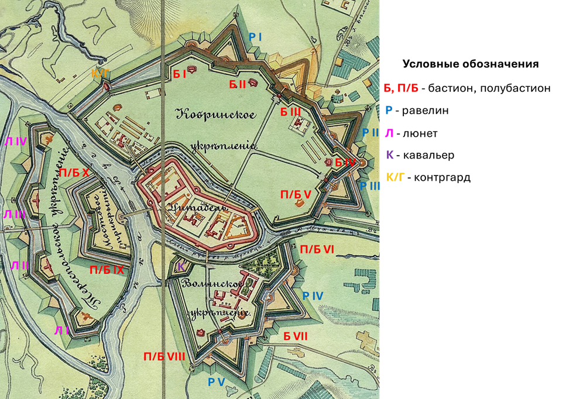
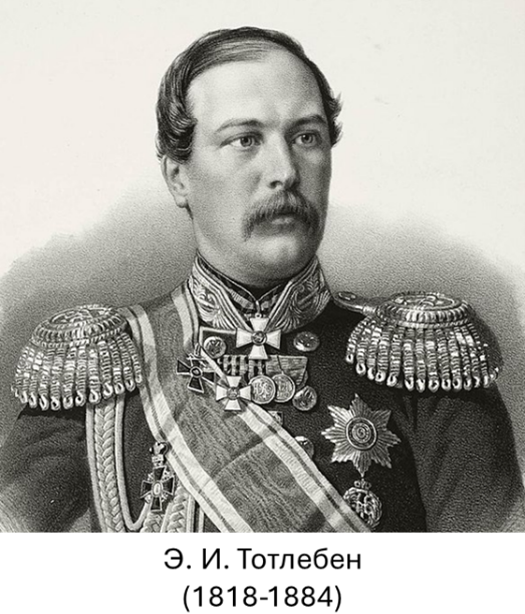
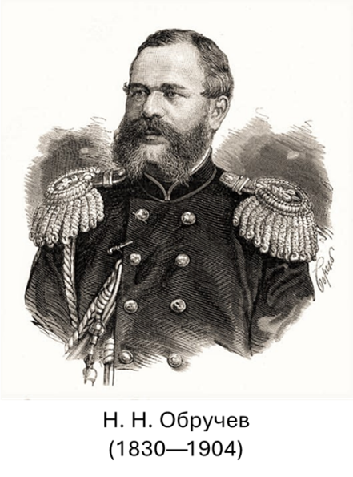
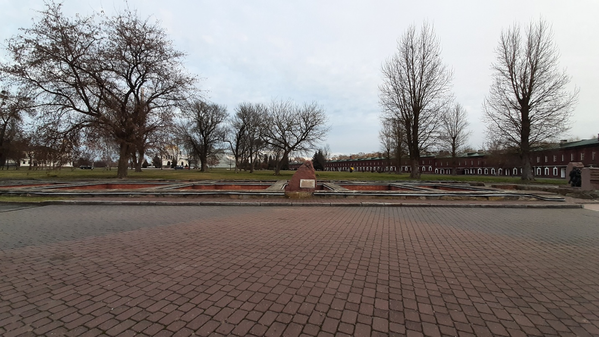

Брестская крепость является уникальным памятником военной истории и фортификационного искусства, сыгравшим важную роль в обороне западных рубежей Российской империи и ставшим символом героизма в годы Великой Отечественной войны.
Выбор места для строительства крепости был обусловлен важным военно-стратегическим положением Брест-Литовска (Бреста) на западе Российской империи.  Во-первых, город выступал в качестве западной крайней точки Днепровско-Бугского водного пути, основу которого составлял построенный в 1775–1783 гг. одноименный канал. Во-вторых, по итогам Венского конгресса 1814–1815 гг. был закреплен статус Царства Польского как автономной территории в составе Российской империи. В связи с эти для обеспечения надежной коммуникации с данным регионом было принято решение о строительстве кратчайшей сухопутной дороги – Московско-Варшавского шоссе. Западный участок шоссе (от Варшавы до Брест-Литовска) был завершен в 1823 г., а восточный, строительство которого велось со стороны Москвы, – в 1849 г., т. е. уже после завершения строительства крепости. Вопрос о строительстве современных фортификационных укреплений в районе Брест-Литовска возник практически сразу после его включения в состав Российской империи в результате третьего раздела Речи Посполитой (1795 г.).
Одним из первых такую идею выдвинул военный инженер К. И. Опперман в 1796 г., занимаясь разработкой проектов по укреплению новой западной границы. В подготовленном под его руководством отчете (инструкции) «Для обозрения новой границы с Пруссией и Австрией» указывалось, что соответствующая почти 200-километровая граница требует возведения девяти крепостей первой линии, в том числе в районе Брест-Литовска. Схожей позиции относительно дисклокации фортификационного комплекса рядом с Брест-Литовском в конце XVIII – начале XIX вв. придерживался и ряд других военных деятелей: П. К. фон Сухтелен, Н. В. Репнин, Ф. П. Деволан, М. Б. Барклай-де-Толли. К. И. Опперман обосновал новый принцип военной доктрины, заключающийся в сосредоточении основных сил в отдельных важнейших пунктах с целью сокращения их общего числа и недопущения дробления войск на большое число слабых гарнизонов, что позволяло сохранять потенциал для проведения полевых сражений. Таким образом, крепости, по его мнению, должны были рассматриваться не как преграды для неприятельских войск, а как инструмент обеспечения маневренности войск. Соответственно крепости должны были обладать мощной складской инфраструктурой для обеспечения наступательных операций полевых войск и иметь выгодное транспортно-географическое положение в узлах сообщений. В 1796 г. военное руководство страны поручило исследование новой конфигурации западной границы Российской империи для последующего ее защитного обустройства инженер-генералу П. К. фон Сухтелену. Для это ему, в частности, были переданы материалы, ранее подготовленные К. И. Опперманом. Неудивительно, что, поддержав идею строительства крепости в Брест-Литовске, П. К. фон Сухтелен в 1807 г. разработал ее проект.
Систему прикрытия западных границ, схожую с идеями К. И. Оппермана, предложил в 1797 г. Ф. П. Деволан. Ее ключевое отличие заключалось в создании трех линий крепостей, вместо двух. В эти же годы командующий войсками в Польше, Лифляндии и Эстляндии Н. В. Репнин обосновывал целесообразность  возведения на западных границах трех основных крепостей – в Вильно, Гродно и Брест-Литовске. В качестве укрепленного лагеря рассматривал Брест-Литовск и выдающийся полководец М. Б. Барклай-де-Толли. В городе предполагалось организовать оперативную базу для 20-тысячной армии. Однако реализации этих идей помешали русско-прусско-французская 1806–1807 гг., русско-шведская 1808–1809 гг. и русско-французская войны 1812–1814 гг.  Фортификационное строительство активизировалось лишь после восшествия на престол в 1825 г. Николая I, который придавал укреплению западных рубежей приоритетное значение. При этом был одобрен проект трех линий крепостей, включавших также и старые укрепления. К первой линии относились возводимые на р. Висла Новогеоргиевская (Модлин) крепость к северо-западу от Варшавы при впадении р. Нарев, Варшавская (Александровская) цитадель в Варшаве и Ивангородская (Демблин) крепость к юго-востоку от Варшавы. Вторую линию должна была составить крепость в Брест-Литовске. В состав третьей линии предполагалось включить модернизированные крепости в Киеве, Бобруйске и Динабурге. Разработка плана Брест-Литовской крепости была поручена К. И. Опперману, который еще более четверти века ранее обосновывал необходимость строительства здесь фортификационного укрепления. План был подготовлен в 1829 г. и после внесения ряда изменений был утвержден Николаем I в 1833 г. План предусматривал строительство крепости на месте существующего поселения и сложившейся исторической застройки. Гражданское население переселялось в восточном направлении, формируя новый центр Брест-Литовска. При этом между возводимой крепостью и новой жилой застройкой города обеспечивалось широкое открытое и незастроенное пространство – эспланада. Сносу и коренному переустройству подверглись практически все здания и сооружения «докрепостного» Брест-Литовска, в том числе был разрушен древний Брестский замок. Земляные работы начались уже в 1833 г., а 1 июня 1836 г. в торжественной обстановке был заложен первый камень в фундамент будущей казармы Центрального укрепления – Цитадели, возводимой на месте торгово-ремесленного центра города. Волынское (Южное) укрепление сооружалось на месте древнего детинца, где располагался уже упомянутый Брестский замок. Кобринское (Северное) укрепление строилось на месте Кобринского предместья, где находились усадьбы городских жителей. Тереспольское (Западное) укрепление должно было разместиться на левом берегу Западного Буга на территории местечка Тересполь с выселением его жителей и сносом их жилищ. Таким образом, крепость была расположена на четырех островах, образованных рукавами реки Мухавец и заполненными водой рвами, – Центральном, Северном, Южном и Западном.
По периметру Центрального острова сооружалась двухэтажная кирпичная кольцеобразная (кольцевая) казарма высотой около 11 м и протяженностью 1,8 км. Она состояла из 500 казематов с амбразурами для артиллерийских орудий и бойницами для стрелкового оружия и предназначалась для размещения гарнизона численностью 12 тыс. чел. Толщина наружных стен с бойницами и амбразурами достигала 2 м, внутренних стен с окнами – до 1,5 м. Под всеми сооружениями Цитадели, в том числе кольцевой казармой, находились подвальные помещения, выполнявшие, как правило, складские функции. Сквозного прохода через всю кольцевую казарму и ее подвалы не предусматривалось. Подходы к стенам казармы прикрывали речные рукава Мухавца и четыре полубашни, позволяющие вести фланговый огонь. Центральный остров связывался с другими укреплениями крепости посредством мостовых сооружений, а в пределах кольцевой казармы обустраивались ворота – Трехарочные и Бригидские со стороны Северного острова, Холмские – с Южного острова, Тереспольские – с Западного острова. За пределы крепости выводили Южные (Николаевские), Восточные (Михайловские), Северные (Александровские), Северо-Западные (Графский проезд) ворота и Варшавский проезд.
Среди зданий Цитадели особое место занимала церковь Святого Николая, преобразованная в 1939 г. в клуб 84-го стрелкового полка, и расположенный рядом с ней домик священнослужителя (превращенный позднее в столовую командного состава), здание инженерного управления, известное как «Белый дворец», где в 1918 г. был подписан Брестский мир – мирный договор между Советской Россией и Центральными державами.
Основу системы обороны Кобринского укрепления (Северный остров) составляют набережный вал, четыре бастионных фронта (участок крепостной стены, который состоит из двух выступающих угловых укреплений (бастионов) и соединяющей их прямой стены – куртины) и тенальный фронт (фортификационное укрепление с изломанными куртинами и входящим углом между фасами), в совокупности образующие так называемую оборонительную ограду укрепления. Фронты состоят из четырех бастионов (пятиугольное долговременное фортификационное сооружение, возводившееся на углах крепостной ограды, состоящее из двух фасов (передних сторон), двух фланков (боковых сторон) и открытой горжи (тыльной стороны)) № 1, № 2, № 3, № 4, полубастиона № 5 (упрощенный вариант бастиона, состоящий из одного фаса и фланка, а также открытой горжи) и куртин 1-го, 2-го, 3-го и 4-го фронтов. Вне данной ограды, перед тенальным фронтом были возведены контргард (внешнее вспомогательное укрепление бастионной фортификации в виде земляного вала, часто облицованное камнем и имеющее, как правило, форму полумесяца), три равелина (укрепление треугольной формы, которое располагается перед крепостным рвом между бастионами) и два траверса (укрепленный вал, стена или земляная насыпь, возводимая поперек линии обороны или рва для защиты от прямого огня и обстрела с флангов) впереди бастиона № 5 на правом берегу р. Мухавец.
Волынское укрепление (Госпитальный или Южный остров) состоит из непрерывной ограды – двух бастионных фронтов и кавальера (фортификационного укрепления в виде земляного сооружения, обычно возвышающегося над главным валом крепости или бастиона для обеспечения ярусного артиллерийского обстрела). Вне ограды имеются два траверса впереди полубастиона № 6, два равелина – № 4 и № 5, два траверса впереди полубастиона № 8 и траверс впереди правого фаса полубастиона № 8.
Тереспольское укрепление (Пограничный или Западный остров) расположено на левом берегу Западного Буга. Оно состояло из 4-х земляных соединенных общим рвом люнетов (выступающих дугообразных или треугольных земляных либо каменных батареей, расположенных перед основной крепостной стеной). Люнеты, располагавшиеся по центру, имели горжу (тыльную, заднюю часть укрепления, обращенную в сторону крепости или тыла). За люнетами было расположено предмостное укрепление в виде земляного горнверка (дополнительного укрепления перед основной стеной крепости, выступающего вперед и состоящего из двух небольших соединенных стеной выступов – полубастионов). Все четыре укрепления были обнесены 10-метровым главным валом, внутри которого находились кирпичные помещения. Перед валом проходил заполненный водой ров. В главном валу толщиной до 8,5 м были прорезаны туннели ворот (проходов) – Северо-Западных, Северных, Восточных и Южных. К ним через передовой ров вели узкие мостовые насыпи.
Официальное открытие Брест-Литовской крепости, получившей первый класс, состоялось в торжественной обстановке 26 апреля 1842 г. На тот момент она являлась одним из самых совершенных фортификационных укреплений Российской империи. О стратегическом значении крепости свидетельствует тот факт, что за время своего царствования Николай I посещал ее семь раз.
Однако развитие артиллерийского вооружения требовало совершенствования и крепостных сооружений. В связи с этим в 1864 г. началась реконструкция крепости по плану, разработанному известным русским фортификатором генерал-адъютантом Э. И. Тотлебеном. Согласно этому плану, Брестскую крепость планировалось превратить в крепость фортового типа. Непосредственно в крепости были проведены работы по утолщению главного вала, строились казематированные артиллерийские батареи, капониры, дополнительные пороховые погреба, на Кобринском укреплении позади двух бастионов были построены два редута, вошедшие в историю как «Западный» и «Восточный» форты. Последние представляли собой подковообразные земляные валы, в которых находилась «внутренняя подкова» – земляной вал меньшей ширины, но более высокий и с обустройством двухярусных кирпичных помещений.
В конце 1860-х годов севернее крепости проложили железную дорогу Москва – Варшава. Ее насыпь препятствовала контролю северного сектора и затрудняла обстрел с Северного острова, создавая мертвую зону. По этой причине севернее насыпи в 850 м от главного вала крепости был построен форт «Граф Берг».
В мае 1876 г. в Брест-Литовск прибыла комиссия под председательством генерала Н. Н. Обручева, управляющего делами Военно-ученого комитета, для стратегического обзора местности.  Военные инженеры наметили пункты для возведения вокруг Брестской крепости мощного оборонительного пояса. По своей сути этот пояс представлял собой цепь фортов, образующих вокруг Цитадели окружность, близкой к правильной форме. За период 1878–1888 гг. на удалении 3,5–4 км от главной ограды крепости было построено 9 фортов, отстоящих друг от друга примерно на таком же расстоянии. В результате оборонительный обвод крепости увеличился до 35 км. Все форты имели номерное обозначение от I до IX. Перед началом русско-японской войны в северо-восточном секторе был возведен также форт X.В 1909 г. был разработан план модернизации Брест-Литовской крепости путем возведения второго пояса (кольца) фортов. Согласно плану, оборонительный обвод должен был состоять из 14 фортов, получивших литерные обозначения от «А» до «О», 21 опорного пункта, 5 оборонительных казарм и нескольких десятков артиллерийских батарей. Второй пояс должен был включать 11 новых фортов, сооружаемых на расстоянии 6–7 км от крепости. Для снижения затрат при сохранении функциональной эффективности в состав второго кольца фортов включались «старые» форты I, VIII и X первого пояса. При этом форты VIII и X получили также литерные идентификаторы – соответственно «Б» и «Д». Однако к строительству фортов приступили только летом 1913 г., за год до начала Первой мировой войны. В ходе разразившейся войны крепостным сооружениям был нанесен существенный урон. Во-первых, при наступлении немецких войск массированный артиллерийский обстрел немецкими войсками причинил отдельным строениям крепости значительные разрушения. Кроме того, часть фортификационных сооружений первого и второго поясов, ориентированные в северо-восточном, восточном и юго-восточном направлении, были подорваны в 1915 г. при отступлении русских войск. Это должно было облегчить установление контроля над утерянными территориями при последующих контрнаступлениях и их освобождении.
Подписание Брестского мира, фактически означавшего выход уже Советской России из Первой мировой войны, не принесло мирной жизни на территорию бывшей Российской империи. В 1919–1921 гг. разворачивались события советско-польской войны, по итогам которой западная территория Беларуси вошла в состав Польши. С 1921 по 1939 гг. Брестская крепость являлась военным городком, где размещались части округа IX корпуса польской армии. В ходе Освободительного похода Красной армии в Западную Беларусь 22 сентября 1939 г. ее части вступили в Брест. Крепость продолжила выполнять функции военного городка. Накануне Великой Отечественной войны здесь размещались части 6-й и 42-й стрелковых дивизий, 17-й Краснознаменный пограничный отряд, 132-й отдельный батальон конвойных войск НКВД, части окружного подчинения, военные госпитали, а также проживали семьи командного и начальствующего состава.
С началом боевых действий 22 июня 1941 г. Брестская крепость стала одним из самых стойких очагов сопротивления на западной границе СССР. Находясь в окружении, испытывая острую нехватку боеприпасов, медикаментов, продовольствия и воды, воины Брестского гарнизона и члены их семей проявили исключительную стойкость и мужество. Оборона Брестской крепости продолжалась около месяца. Уже в послевоенные годы оборона крепости стала символом героизма, верности присяге и любви к Родине. Указом Президиума Верховного Совета СССР от 8 мая 1965 г. ей было присвоено звание «Крепость-Герой», а 25 сентября 1971 г. состоялось открытие мемориального комплекса «Брестская крепость-герой». В настоящее время комплекс внесен в Государственный список историко-культурных ценностей Республики Беларусь.
(Источник: авторское фото)
(Источник: авторское фото)